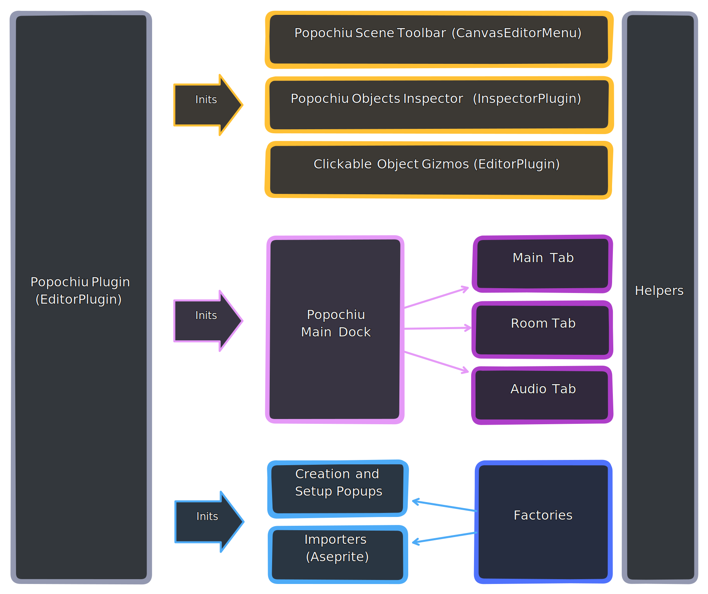
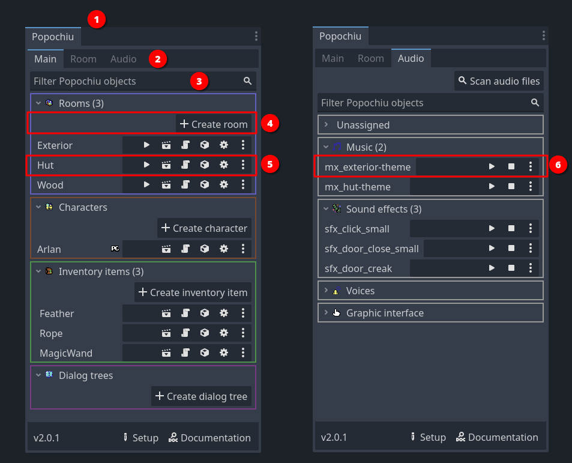
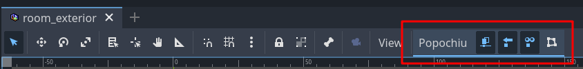
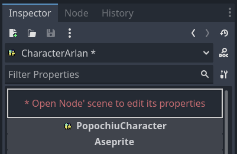
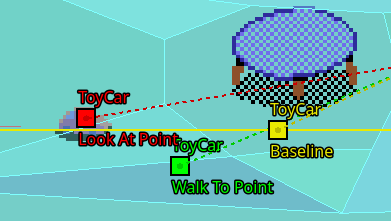

Editor Plugin
Here is a visual representation of the plugin architecture. Read on to learn about each individual block.

Popochiu Plugin
This is the plugin activated when the Popochiu addon is enabled in the Project Settings.
It can be found in the editor/popochiu_plugin.gd file.
Main Dock
The Main Dock is Popochiu's primary interface. It allows developers to create, edit, and manage the main elements of the game without manual intervention and (ideally) without accessing the Scene Tree Editor.

Located in the editor/main_dock folder, it contains:
popochiu_dock.tscn: The scene defining the dock's UI using Control nodes (1).popochiu_dock.gd: The script handling the dock's logic.popochiu_filter.gd: A script for filtering dock items, essential for large games with many items. (3)
The folder also contains the Main Dock's building blocks: tabs (2) dedicated to specific elements and their components: groups (4) and rows (5) and (6). Specifically:
main_tab: Interface and logic for listing game elements such as characters, rooms, dialogues, inventory items, etc.room_tab: Interface and logic for listing room-specific elements like props, hotspots, markers, walkable areas, etc.audio_tab: Interface and logic for listing audio resources like music and sound effects.
These tabs display a set of popochiu_group instances, which group zero or more popochiu_row instances (specialized into object_row (5) for general or room-specific objects and audio_row (6)for music and sound effects). Groups include buttons for creating new child elements, while rows offer quick access to the scene, script, or specific properties of the represented elements.
Scene Toolbar
In the editor/canvas_editor_menu folder, you'll find the canvas_editor_menu.gd script, which adds buttons defined in the canvas_editor_menu.tscn scene to the Scene Preview toolbar.

The script also handles the button logic, which primarily activates Viewport Gizmos, discussed later.
Objects Inspector
The editor/inspector folder contains scripts that modify specific game objects' inspector panels. For example, the character_inspector_plugin.gd script hides certain properties of Character scenes when selected inside a Room, to prevent local modifications of properties that should always be edited in the main scene.

Popups
The editor/popups folder contains subfolders, each with a .tscn scene and a .gd script implementing a pop-up window required by the plugin. Examples include the setup window for a new game, the window for creating new game objects, and the window for migrating to a new Popochiu version. Speaking of which...
Migrations
The editor/migration folder includes a basic framework (migration/popochiu_migration.gd) for implementing automated updates from older to newer Popochiu versions.
Know what you're doing
Writing migrations is a complex and delicate process requiring extensive testing, but it’s essential for ensuring that ongoing projects can be updated to newer versions of Popochiu.
To create a new migration, copy the popochiu_migration_template.gd script into the editor/migration/migrations/ folder (note the s at the end!) or duplicate an existing migration script from the same folder, updating its content as needed.
Tip
Writing migrations often involves updating resources, scripts, and files in the game folder. This is a delicate process that requires precision.
Thankfully, the Editor Helpers and the utilities in editor/migration/helpers will be incredibly helpful!
Gizmos
Godot doesn't provide built-in functions for drawing interactive elements in the Scene Preview, so we had to create our own. These can be found in the editor/gizmos folder, along with a base class and the plugin (gizmo_clickable_plugin.gd) that registers and initializes them.

Gizmos allow us to display handlers that game developers can easily manipulate with the mouse to populate properties like Walk-To Point, Look-At Point, and Baseline. In the future, these could be extended to expose more complex features, but generally, all interactive elements for the Scene Preview are located in this folder.
Importers
The editor/importers folder contains docks and their corresponding logic for importing game assets.
Currently, the only available importers configure character animations and create rooms (with graphics and animations) from properly prepared Aseprite files.
We hope to add more importers in the future to support other elements and source formats.
Helpers (Editor)
The editor/helpers folder contains classes and functions commonly used by many other Editor Plugin components.
Note
Understanding this folder’s content is crucial to avoid writing complex and redundant code. Take the time to review it before contributing advanced plugin features!
Key scripts include:
popochiu_editor_helper.gd: A collection of static functions for handling complex and frequent tasks like opening pop-ups, managing the lifecycle of game objects (creation, deletion, updating), or interacting with the Godot editor (e.g., selecting a scene, modifying dock state).popochiu_gui_templates_helper.gd: Contains public methods for creating GUIs within thegamefolder from templates provided by the Engine. These methods are used by other Popochiu components like the Setup pop-up and the GUI Tab.-
popochiu_signal_bus.gd: Implements the Publisher-Subscriber pattern to decouple UI components in the Editor Plugin and streamline event-driven interactions.Detailed Example
Imagine two components (a button in the Main Dock and one in the toolbar) and a third element (e.g., a label in an inspector) that must update when either button is pressed. Using signals, the label would need to listen to two separate signals—one from each button. With the Signal Bus, the label listens to a single signal emitted by this class, triggered explicitly by both buttons. While this example is simple, some interactions in Popochiu notify many recipients. The Signal Bus keeps things organized and makes the code more explicit and readable.
Factories and Config
Last two structural elements are less glamorous but equally important:
- The
editor/factoriesfolder contains classes used to build game and room objects (like Characters, Rooms, Props, etc.) from the Engine’s templates. Factories are used by creation pop-ups triggered from the Main Dock and by importers that create rooms from Aseprite files. All classes inherit fromfactory_base_popochiu_obj.gd, which provides shared functions. -
The
editor/configfolder contains the logic for exposing Popochiu’s Project Settings and Editor Settings, as well as functions for retrieving parameters within Plugin scripts.Warning
Always use the getter methods in
config.gdandeditor_config.gdto access configuration values, ensuring that at least the default value is returned.